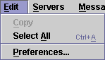

The Edit Menu contains commands for storing and retrieving text from the system clipboard, and editing preferences.

| Keyboard Shortcut: | Ctrl+C |
| Toolbar Button: |
Copies the current selection from the message view panel into the system clipboard. This menu item is only enabled when a message is being displayed and text in the message body is selected.
| Keyboard Shortcut: | Ctrl+A |
| Toolbar Button: |
Selects the entire body of the currently selected message. This menu item is only enabled when a message is being displayed.
| Keyboard Shortcut: | None |
| Toolbar Button: |
Displays a dialogue that can be used to configure various aspects of NewsAgent. See dialogues for more information.